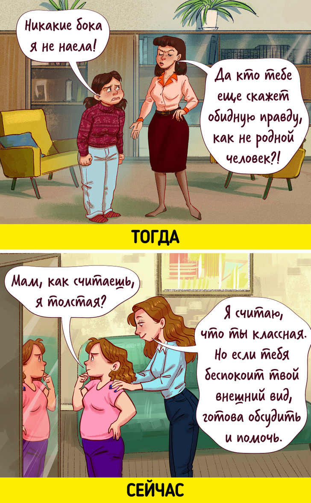
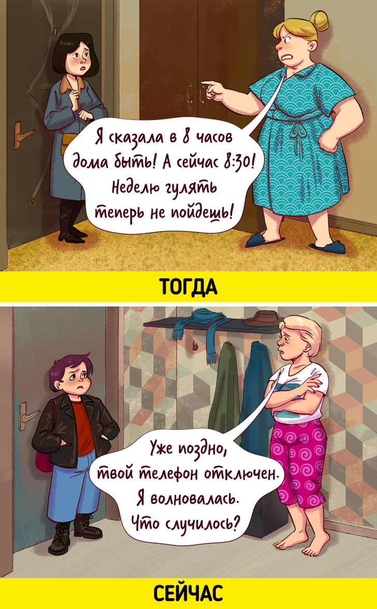
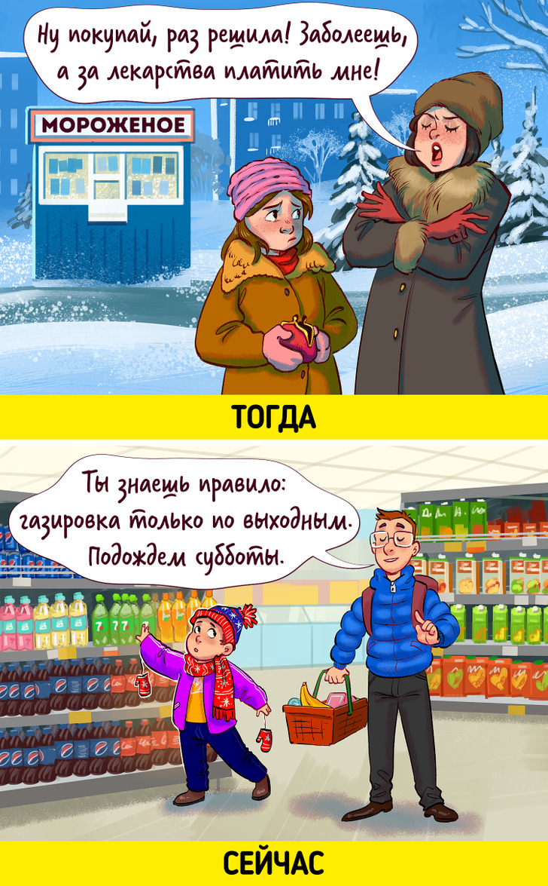
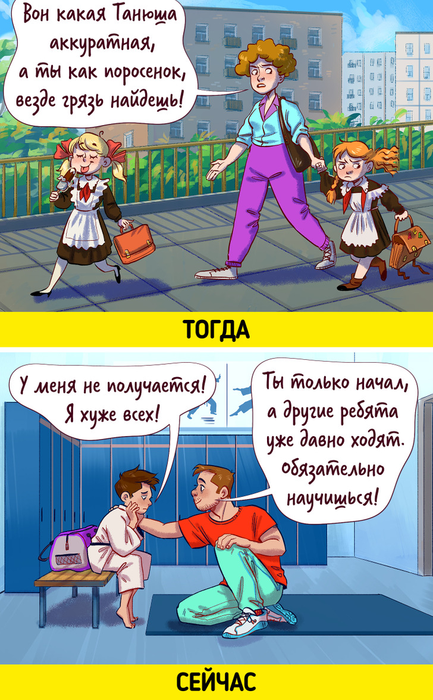
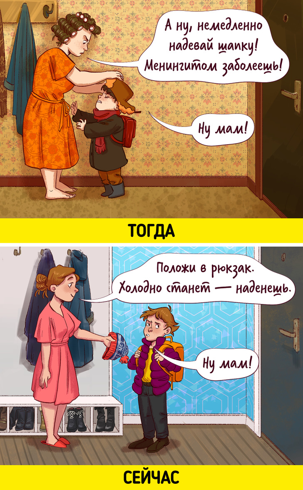
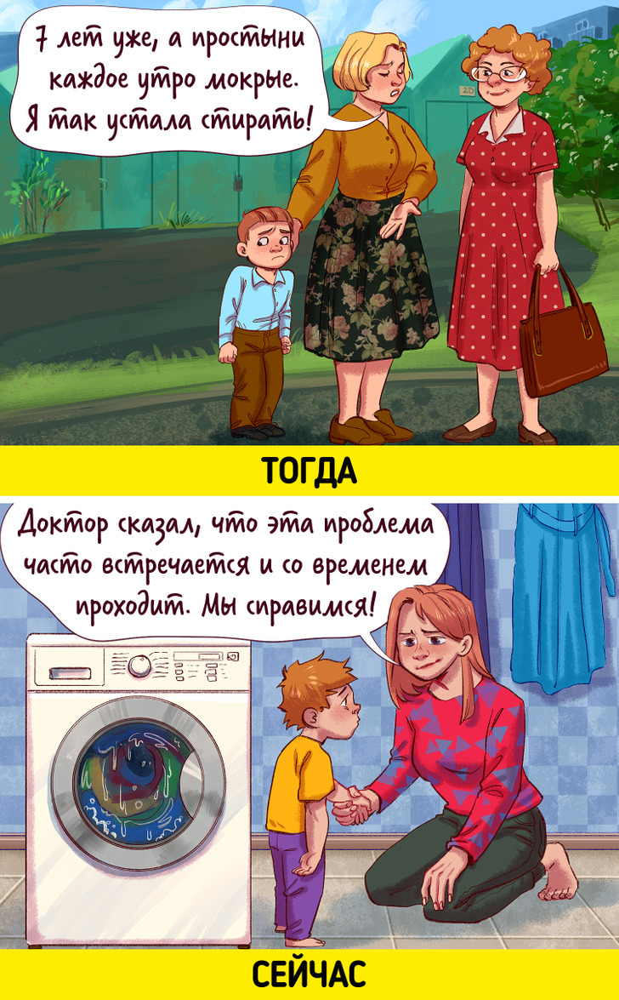
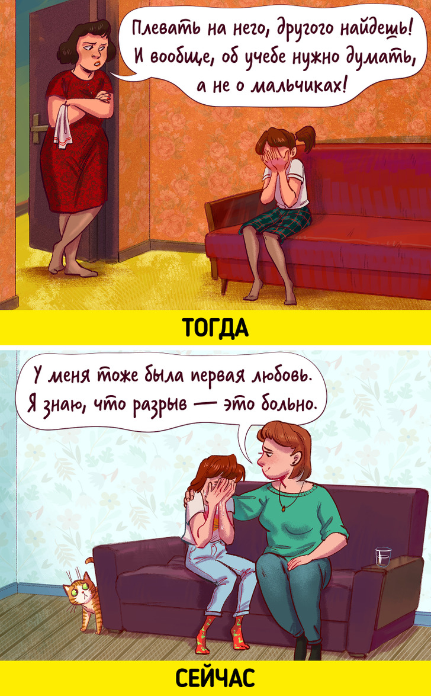
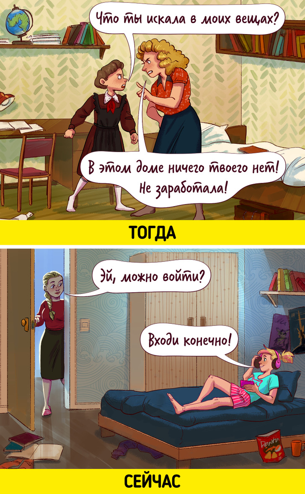
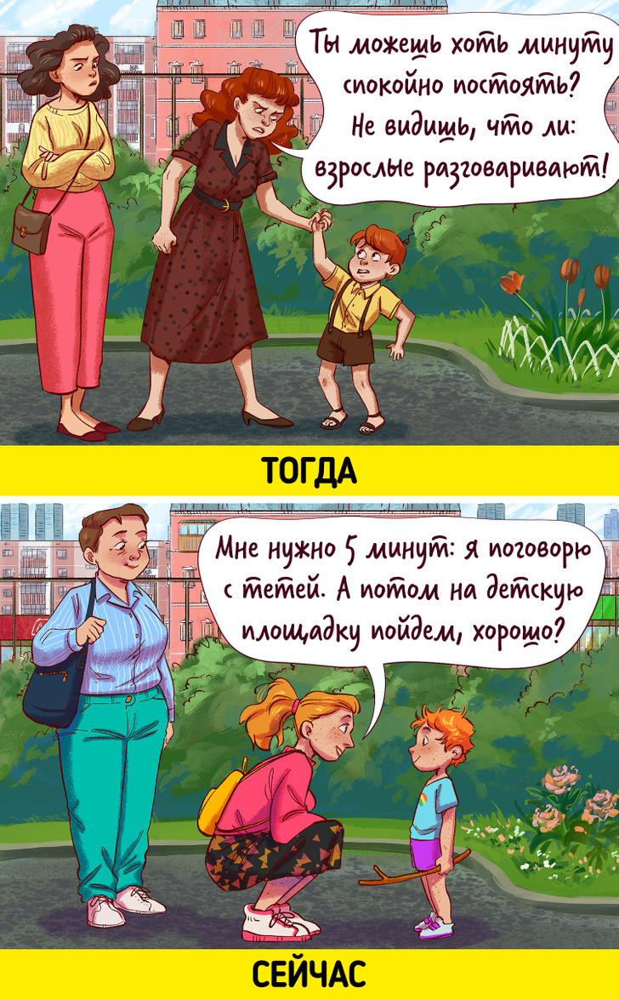

9 родительских ошибок, которые раньше считались нормой. А современные мамы и папы больше не хотят так воспитывать детей
Мало кто из родителей 30 лет назад читал статьи о воспитании и водил свое чадо к психологу. И вряд ли стоит осуждать родителей за то, что они воспитывали детей как умели, — времена были другими. Но современные мамы и папы могут полагаться не на метод проб и ошибок, а на книги и рекомендации опытных специалистов.Мало кто из родителей 30 лет назад читал статьи о воспитании и водил свое чадо к психологу. И вряд ли стоит осуждать
родителей за то, что они воспитывали детей как умели, — времена были другими. Но современные мамы и папы могут
полагаться не на метод проб и ошибок, а на книги и рекомендации опытных специалистов.
Мы в ADME решили перечислить ошибки родителей прошлого, которые не хотели бы повторять сами.
1. Говорить обидные слова под видом «правды»

Говорить обидные слова под видом «правды»
9 родительских ошибок, которые раньше считались нормой. А современные мамы и папы больше не хотят так воспитывать детей
Некоторые из тех, кто был ребенком пару десятков лет назад, сталкивались с убеждением родителей в том, что они должны
критиковать детей ради их же блага. Это могли быть как субъективные оценки («М-да, таланта к рисованию у тебя точно
нет»), так и грубые реплики по поводу реальных трудностей («У тебя одна-единственная обязанность — учиться! А ты и с ней
не можешь справиться, одни двойки!»).
Cейчас многие мамы и папы стараются разговаривать с детьми об их проблемах без нажима, доверительно. Психологи
рекомендуют запланировать для сложного разговора место и время и дать понять ребенку, что вы готовы не обвинять, а
помогать.
2. Наказывать, не разобравшись

В прошлом родители нередко обращали свое беспокойство за детей в довольно жесткие формы: за непослушание можно было
лишиться карманных денег, прогулок, общения с друзьями, а подчинения своему авторитету родители могли добиваться криками
и даже битьем. Попытки детей объяснить что-либо часто прерывались фразами вроде «Не оправдывайся!» и «Ты это специально
делаешь, мне назло!». Такие методы приводят к потере детского доверия.
Быть любящим родителем — не означает все позволять. Но лучше, если ограничения будут не командами и не указаниями
«сверху», а списком правил, которые вы заранее обсудили с ребенком. Он должен знать, что ему можно, что нельзя и что
последует, если он не будет эти правила выполнять. Если нарушение все-таки произошло, стоит разобраться в причинах и
обсудить ситуацию без обвинений (лучше использовать «я-сообщения»: говорить о том, что испытываете по этому поводу вы
сами).
3. Разрешать, не разрешая

Брошенное недовольным тоном «Делай что хочешь, я тебе свое мнение высказал» и другие похожие фразы — яркий пример
двойного послания. Такое поведение родителя знакомо многим: на словах он позволяет делать то, что хочет ребенок, но всем
своим видом показывает, что рассердится, если будет «не по-его». Если ребенок сталкивается с такими манипуляциями
регулярно, это может привести к психологическим сложностям в будущем.
Вместо этого нужно сказать честное «нет» и объяснить причину отказа. А если ребенку хорошо известны семейные правила,
которые вы вместе установили и стараетесь соблюдать, постоянные запреты становятся не так уж необходимы.
4. Приводить в пример ребенку более «успешных» детей

Кто из нас не слышал время от времени, как мама восклицает: «Ну почему у всех дети как дети, а у меня горе луковое?» И
вряд ли мы при этом ощущали желание стать лучше. Скорее, чувство было другим — что мы не заслуживаем родительской любви
Вряд ли нынешним родителям удастся не сравнивать своего ребенка с другими детьми, но ведь сравнивать можно по-разному —
с упреком и пренебрежением или спокойно обсуждая с ребенком, чему и как можно научиться у тех, кто умеет больше. И
поддерживать его в желании научиться.
5. Запугивать ребенка последствиями его поступков

От наших мам и пап мы могли услышать, что от мороженого обязательно будет ангина, от хождения без шапки — менингит, а
если громко вопить — «заберет вон тот дядя».
Сейчас родители стараются не запугивать и не угрожать, а подобрать нужные слова и убедить ребенка сделать то, что они
просят.
6. При ребенке обсуждать его с другими людьми

Встретив на улице кого-то из знакомых, наши родители могли рассказать им о наших проблемах, перечислить недостатки или
пожаловаться на то, как им тяжело нас воспитывать, не смущаясь того, что ребенок стоит рядом.
Нынешние мамы и папы осознают, как важно быть на стороне своих детей в любой ситуации. А все «разборы полетов» можно
провести и без посторонних глаз, в спокойной обстановке.
7. Обесценивать чувства и подшучивать над переживаниями

Многие из нас слышали в детстве фразы вроде «Нашел из-за чего страдать», «Хватить реветь из-за пустяков!» или «Ишь,
какой нежный выискался». Эти слова демонстрировали убежденность родителей в том, что негативные эмоции следует скрывать.
Сейчас многие знакомы с теорией привязанности, гласящей, что без «значимого взрослого» рядом ребенка ждут
психологические проблемы в будущем. И одна из главных задач такого взрослого — познакомить ребенка с миром эмоций, в том
числе и негативных, и научить справляться с ними. Для этого психологи советуют не игнорировать чувства ребенка, а
разделить и «прожить» их вместе с ним.
8. Лишать ребенка личного пространства

Многие нынешние взрослые в детстве и понятия не имели о «личном пространстве». Их родители считали, что у детей не
должно быть от них секретов, а стучаться перед тем, как войти в детскую комнату (если она вообще была), было не принято.
Сегодняшние мамы и папы понимают, что ребенку, так же как и взрослому, важно иметь собственную территорию, где он может
побыть один и полностью расслабиться. А если вы попросились к ребенку в друзья в соцсетях, а он отказал — остается
смириться. Так он отстаивает собственные границы
9. Использовать унижающие формулировки

«Молчи, не позорь меня», «И в кого ты такая уродилась?», «Что это за каракули?», «Что ты возишься как сонная муха?
Шевелись, опаздываем!» — для кого-то это звучит до боли знакомо. Часто взрослые говорили подобные фразы детям от стыда
за то, что их ребенок не соответствует общепринятым «нормам», а значит, и про них могут подумать, что они плохие
родители.
Современные мамы и папы стараются выстроить доверительные отношения и обойтись без вербальной агрессии: криков,
оскорблений, придирок и угроз. Сдерживаться будет легче, если не оценивать ребенка глазами учительницы или соседки, а
смотреть на него своим собственным любящим взглядом.